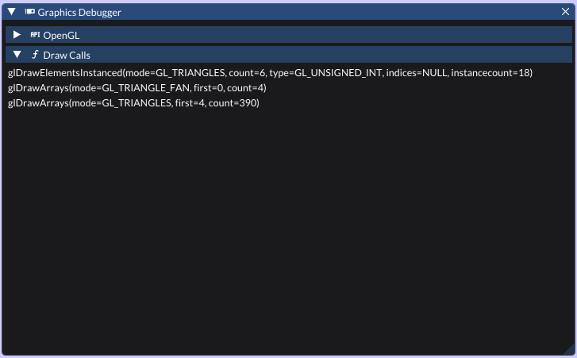

↑ Top
General
Lythium is the 2D successor to Lithium. It comes packaged with a graphical editor and supports
scripting in C++ or Lua. It is cross platform, supporting Windows, Mac and Linux.
A screenshot of the editor.
Technical
- Runs on GPUs with at least OpenGL 4.1
- Object batching
- Texture atlas support
- Efficient resource manager
- C++ and Lua scripting API
The engine uses SDL 2, FMOD, RapidJSON, Lua, MatrixUtil, stb, ImGuiColorTextEdit,
IconFontCppHeaders, glad, and clip as third party libraries.
↑ Top
Example Game Script
This script is an example of Lua scripting in Lythium. If the user presses the A key,
it will log the position of the camera.
test.lua
local Test = {}
Test.prototype = {
lastDown = false
}
function Test.prototype:update()
local keyDown = Input.getKey(Key.A)
if not self.lastDown and keyDown then
local camera = self.entity:find("Viewport"):find("Camera")
Lythium.log(camera.position)
end
self.lastDown = keyDown
end
return Test
A scripting doing the same thing as above, but in C++.
test.cpp
#include <lythium.h>
class Test : public LyComponent {
public:
static constexpr LySerialUID SERIAL_UID = "Test";
static constexpr LySerialUID SERIAL_PARENT_UID = LyComponent::SERIAL_UID;
virtual void update() override {
bool keyDown = lyGetKey(SDL_SCANCODE_A);
if (!_lastDown && keyDown) {
LyEntity *camera = lyGetScene()->find("Viewport")->find("Camera");
Vector2 &p = camera->transform.position;
lyLog("(%g, %g)", (double)p.x, (double)p.y);
}
_lastDown = keyDown;
}
private:
bool _lastDown = false;
}
↑ Top
Graphics debugger, tracking draw calls

The resource browser, with the context menu open
A nice Minecraft tree, with 73 different sprites, all done in 1 draw call.